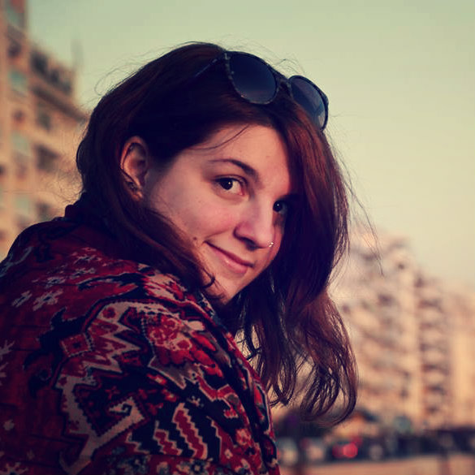

Hello and welcome to my personal photography portfolio!
Here is presented a set of my travelling photos. Each tab represents the country of each group of photos, which then are organised in regions.All photos belong to Antigone M. Founta and are not free to use.
About Me
My name is Antigone M. Founta and I am an addicted traveller occupied with anything related to travelling. I love the adventures of wandering around the globe (which me and my travelling buddy describe at our personal blog, G(r)eeks Travelling) and cannot go anywhere without my Nikon 5100. An amateur photographer, specializing in Travel Photography. Apart from the abovementioned I am also an IT Graduate passionate about a great amount of things, among which are Spatial Computing, Artificial Intelligence and Data Mining, Web Development and many more.
Greece


United Kingdom


Slovakia


Austria